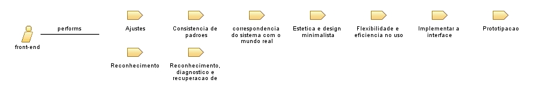

Role: front-end
Relationships

Primary Performs
Ajustes
Consistencia de padroes
correspondencia do sistema com o mundo real
Estetica e design minimalista
Flexibilidade e eficiencia no uso
Implementar a interface
Prototipacao
Reconhecimento
Reconhecimento, diagnostico e recuperacao de erros
Main Description
Desenvolvedor que trabalha com a parte visual do sistema.